检测业务概览
宁夏建筑材料研究院（有限公司）具备全面的建筑检测与鉴定能力，覆盖从原材料到主体结构、从节能环保到智能化的全链条检测服务。公司拥有CMA计量认证、CNAS国家实验室认可等权威资质，为客户提供科学、公正、准确的检测数据。
检测业务大类
检测参数
持证上岗率
计量认证
服务领域：市政工程、道路桥梁、民用建筑、工业建筑、节能改造等。
市政工程材料
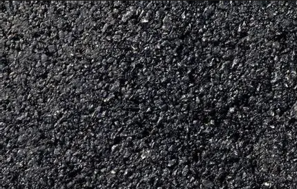
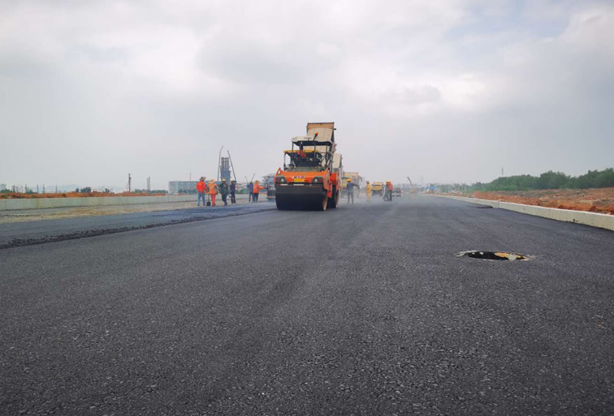
概述
针对城市道路、桥梁、广场、排水管网等市政基础设施中所使用的各类原材料及半成品进行质量检验。通过对材料物理性能、力学性能及耐久性能的系统测试，为市政工程建设的材料选型和进场验收提供科学依据，确保工程实体质量满足设计及使用要求。
检测项目
- 沥青及沥青混合料
- 无机结合料稳定材料
- 集料
- 路基路面
检测标准
- GB/T 50123《土工试验方法标准》
- JTG 3430《公路土工试验规程》
- JTG 3432《公路工程集料试验规程》
- GB/T 14685《建设用卵石、碎石》
- CJJ 1《城市道路工程施工与质量验收规范》
- JTG/T F30《公路水泥混凝土路面施工技术细则》
道路工程
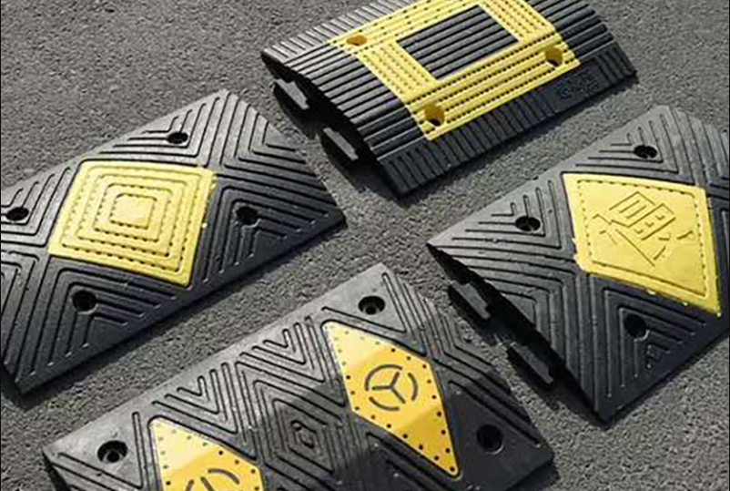
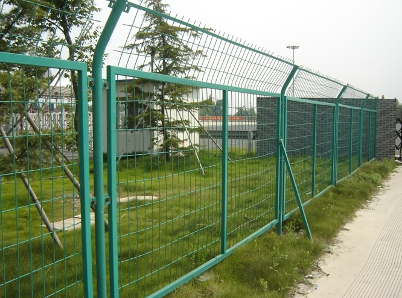
概述
服务于公路与城市道路建设及养护全过程的质量控制与评定。检测内容涵盖路基路面结构层的施工质量验证、交通安全设施的设置规范性与性能有效性评价，以及各类道路附属设施的耐久性与安全性能测试，为道路工程的交竣工验收和安全运营提供技术支撑。
检测项目
- 路基路面
- 交通标志
- 反光膜
- 路面标线
- 涂料
- 突起路标
- 轮廓标
- 隔离栅
- 减速带
- 防腐层
检测标准
- JTG 3430《公路土工试验规程》
- GB/T 50123《土工试验方法标准》
- JTG 3432《公路工程集料试验规程》
- CJJ 1《城市道路工程施工与质量验收规范》
- GB/T 14685《建设用卵石、碎石》
建筑材料
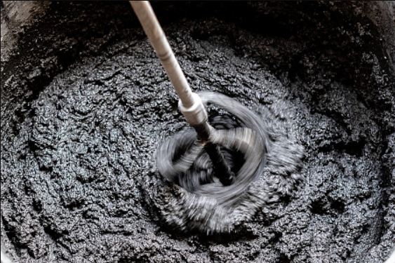
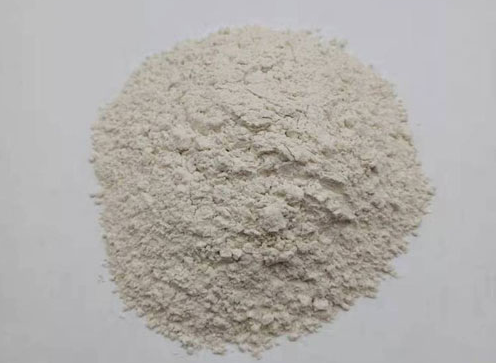
概述
覆盖工业与民用建筑工程中广泛使用的结构材料、装饰材料、功能材料及配套构配件的质量检验。通过对材料的强度、耐久性、加工性能及安全环保指标进行全面测试，为施工企业的进场材料验收、工程监理的质量控制以及竣工验收提供公正、准确的检测数据。
检测项目
- 钢材
- 电焊网编结网
- 水泥
- 掺合料
- 混凝土用钢纤维
- 混凝土用合成纤维
- 砂、石
- 水
- 外加剂
- 混凝土
- 砂浆
- 灌浆料
- 无机非金属材料化学分析
- 室内环境污染物、有害物质
- 石膏
- 包装袋
- 彩砂
- 水磨石
- 高岭土
- 膨润土及其制品
- 种植土
- 土工实验
- 防水卷材
- 漆
- 腻子
- 涂料
- 地坪材料
- 聚合物乳液
- 胶粘剂
- 填缝剂
- 密封材料
- 加固材料
- 防腐材料
- 耐火材料
- 砌墙砖、砖块
- 路面砖
- 瓦
- 墙板
- 人造板
- 地板
- 装饰板材
- 夹芯板
- 纤维制品
- 塑料板材、面材
- 土工合成材料
- 陶瓷砖
- 卫生陶瓷
- 石材
- 仿石饰面材料
- 管材、管件
- 电线、电缆
- 电二套管
- 电缆桥架
- 检查井
- 井盖
- 化粪池
- 运动场地合成材料
- 壁纸、墙纸
- 门
- 轻钢龙骨
- 排水管、输水管
- 混泥土制品
检测标准
- GB/T 1346《水泥标准稠度用水量、凝结时间与安定性检验方法》
- GB/T 5762《建材用石灰石、生石灰和熟石灰化学分析方法》
- GB/T 21372《硅酸盐水泥熟料》
- GB/T 23451《建筑用轻质隔墙条板》
- GB/T 39698《通用硅酸盐水泥出厂确认方法》
- JC/T 2745《石膏矿渣水泥》
无机非金属化学分析及室内环境污染物
概述
运用化学分析及仪器分析手段，对建材原料、半成品及成品中的化学成分与矿物组成进行精确定量分析，同时开展室内空气质量检测和材料有害物质释放量测定。该业务方向服务于建材产品成分核查、生产工艺控制、室内环境污染评价及绿色建材认证等领域，为健康居住环境提供技术保障。
检测项目
- 有害物质
- 不溶物
- 酸融物
- 室内环境
- 放射性
- VOC
- 挥发物含量
- 烧失量
检测标准
- JC/T 1021.2《非金属矿物和岩石化学分析方法 第2部分 硅酸盐岩石、矿物及硅质原料化学分析方法》
- GB/T 5762《建材用石灰石、生石灰和熟石灰化学分析方法》
- GB 46040《墙体材料可浸出有害金属元素限值》
- GB/T 39804《墙体材料中可浸出有害物质的测定方法》
- JC/T 566《吸声用穿孔纤维水泥板》
主体结构
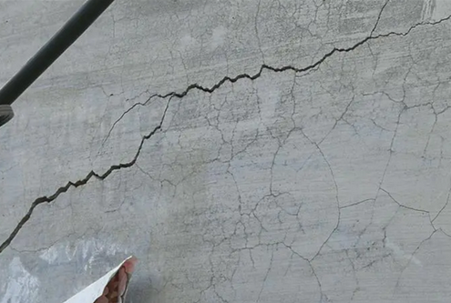
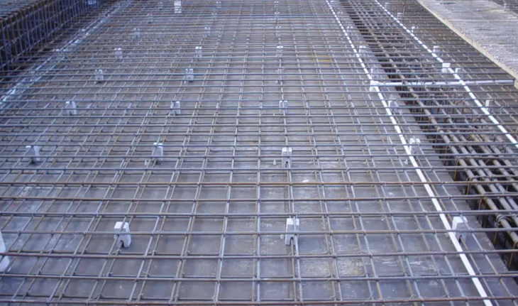
概述
对已建成或施工中的建筑主体结构进行现场质量检测与安全性评估。采用多种无损检测和微损检测方法，获取混凝土构件强度、钢筋配置、构件几何尺寸及裂缝状态等关键参数，为工程质量验收、既有建筑可靠性鉴定及加固改造设计提供技术依据。
检测项目
- 主体结构工程
检测标准
- T/CS 031《建筑主体结构工程现场检测技术规程》
- GB/T 50123《土工试验方法标准》
- JTG 3430《公路土工试验规程》
- GB/T 19889.7《声学 建筑和建筑构件隔声测量 第7部分：撞击声隔声的现场测量》
- DB32/T 4303《建设工程质量检测技术管理规程》
钢结构
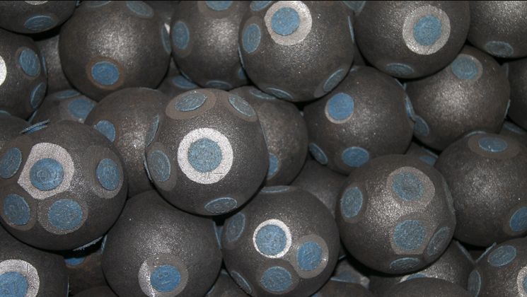
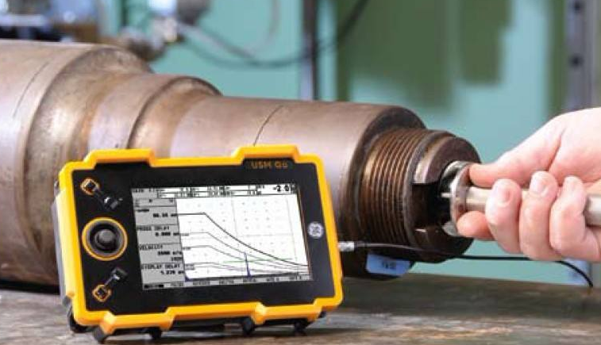
概述
针对钢结构制作与安装过程中的关键质量控制点开展专项检测。运用先进的探伤技术对焊缝内部质量进行评定，对高强度螺栓连接副的紧固性能、构件承载力及防腐防火涂层质量进行系统验证，确保钢结构工程的安全储备和长期服役性能。
检测项目
- 钢结构工程
检测标准
- GB/T 50205《钢结构工程施工质量验收标准》
- GB/T 50661《钢结构焊接规范》
- GB/T 11345《焊缝无损检测 超声检测 技术、检测等级和评定》
- GB/T 3098.1《紧固件机械性能 螺栓、螺钉和螺柱》
- GB/T 2970《厚钢板超声波检测方法》
- JGJ 255《钢结构工程施工规范》
建筑节能工程
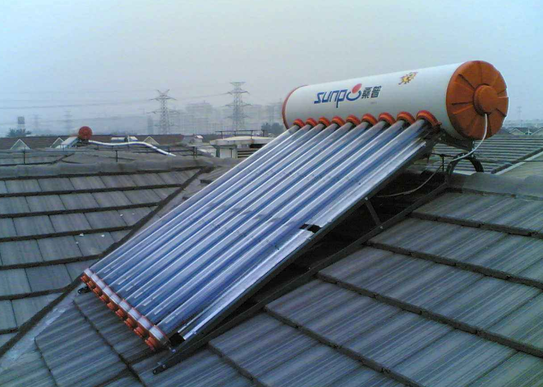
概述
围绕建筑节能设计标准和防火规范要求，对建筑外围护结构、门窗、保温隔热系统及各类节能材料的热工性能进行实验室检测与现场测试；同时依据燃烧性能分级标准对建筑材料的防火安全等级进行评定，为绿色建筑设计和消防安全验收提供双重保障。
检测项目
- 装配式结构
- 建筑节能检测
- 太阳热水系统
- 散热器
- 窗
- 玻璃
- 型材
- 建筑材料燃烧性能
- 外保温系统
- 保温板
- 保温管
- 建筑用绝热制品
- 泡沫混凝土
- 胶粘剂、抹面胶浆
- 玻纤网
- 保温绝热用砂浆
- 保温绝热用无机颗粒
检测标准
- GB/T 30595《建筑保温用挤塑聚苯板（XPS）》
- GB/T 8484《建筑外门窗保温性能检测方法》
- GB/T 7106《建筑外门窗气密、水密、抗风压性能检测方法》
- GB/T 13475《绝热材料稳态热阻及有关特性的测定 防护热板法》
- JGJ 132《居住建筑节能检测标准》
安全防护用品
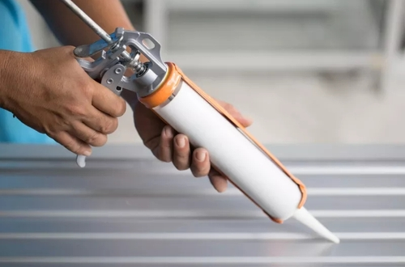
概述
对各类玻璃幕墙、金属幕墙、石材幕墙及其配套密封系统进行全面的性能检验与现场测试。通过对幕墙系统在风压、水密、气密及平面变形等工况下的表现进行实验室验证，并对其玻璃光学热工性能和密封胶粘结耐久性进行专项测试，确保幕墙工程的安全适用与节能美观。
检测项目
- 幕墙
- 幕墙玻璃
- 密封胶
检测标准
- GB/T 31433《建筑幕墙、门窗通用技术条件》
- GB/T 18250《建筑幕墙层间变形性能分级及检测方法》
- GB/T 38264《建筑幕墙耐撞击性能分级及检测方法》
- GB/T 29738《建筑幕墙和门窗抗风携碎物冲击性能分级及检测方法》
- GB 16776《建筑用硅酮结构密封胶》
- JG/T 217《建筑幕墙用瓷板》
安全防护用品
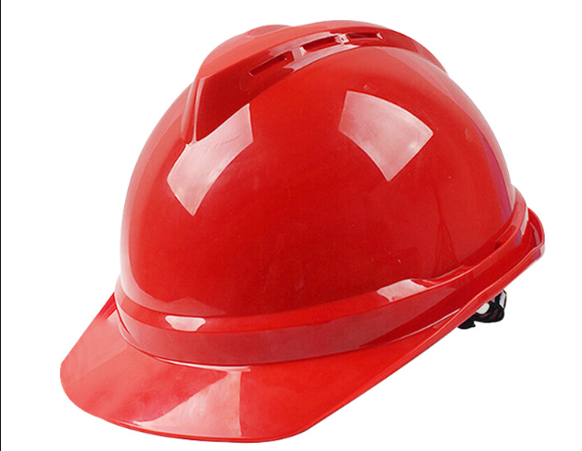
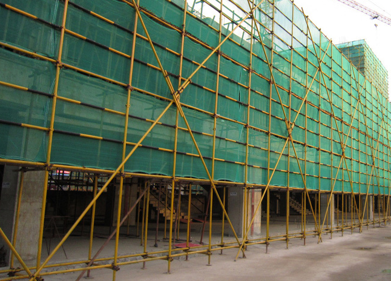
概述
对施工现场和工业生产场所使用的各类安全防护产品进行质量安全性能检验。通过模拟实际工况条件，对防护用品的抗冲击、耐穿透、阻燃、防静电及力学承载等关键性能指标进行测试，严格把关个人及集体防护装备的质量，为一线作业人员生命安全构筑坚实防线。
检测项目
- 脚手架
- 扣件
- 防护服装
- 安全网
- 安全带
- 安全帽
- 灭火器
检测标准
- GB 2811-2019《头部防护 安全帽》
- GB 6095-2021《坠落防护 安全带》
- GB/T 2812《安全帽测试方法》
- GB/T 6096《坠落防护 安全带系统性能测试方法》
建筑智能化系统工程
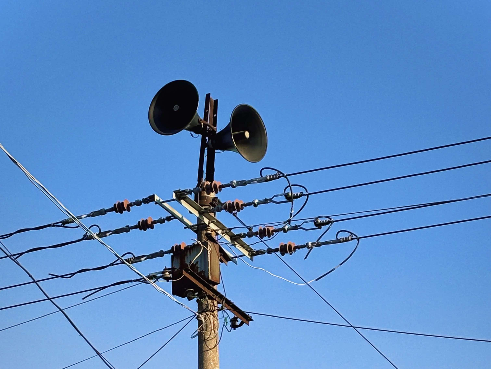
概述
对建筑智能化各子系统从安装质量到系统功能进行全面验证。围绕信息传输网络、安全防范体系、公共广播与应急响应系统及机房基础设施等开展综合测试，评估各系统的信号质量、控制精度和联动响应能力，确保智能建筑高效、安全、稳定运行。
检测项目
- 智能化集成系统
- 信息网络系统
- 综合布线系统
- 公共广播系统
- 安全效术防范系统
- 应急响应系统
- 机房工程
检测标准
- GB 50339《智能建筑工程质量验收规范》
- GB 50348《安全防范工程技术标准》
- GB/T 50312《综合布线系统工程验收规范》
- DBJ/T15-147《建筑智能工程施工、检测与验收规范》（广东省标准）
- DBJ/T 15-131《园区和商业建筑内宽带光纤接入通信设施工程设计规范》
建筑地基基础工程
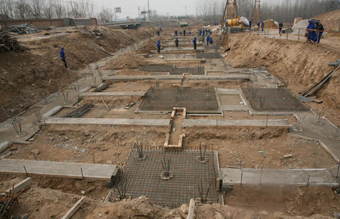
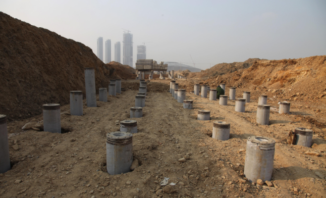
概述
专注于地下隐蔽工程的质量控制，对天然地基、复合地基及桩基的承载力和完整性进行科学评价，同时对抗拔锚杆的锚固性能进行验证。结合基坑工程和基础施工过程中的变形监测数据，为地基基础的设计复核、施工验收及临近建筑物安全提供量化判定依据
检测项目
- 地基基础
- 桩的承载力检测
- 桩身完整性
- 锚杆抗拨承载力
- 建筑基坑工程和基础施工变形监测
检测标准
- T/ZZXJX 287《建筑地基基础检测技术规程》
- GB/T 50123《土工试验方法标准》
- CJJ 1《城市道路工程施工与质量验收规范》
- JTG 3430《公路土工试验规程》
- JTG 3432《公路工程集料试验规程》
建筑地基基础工程
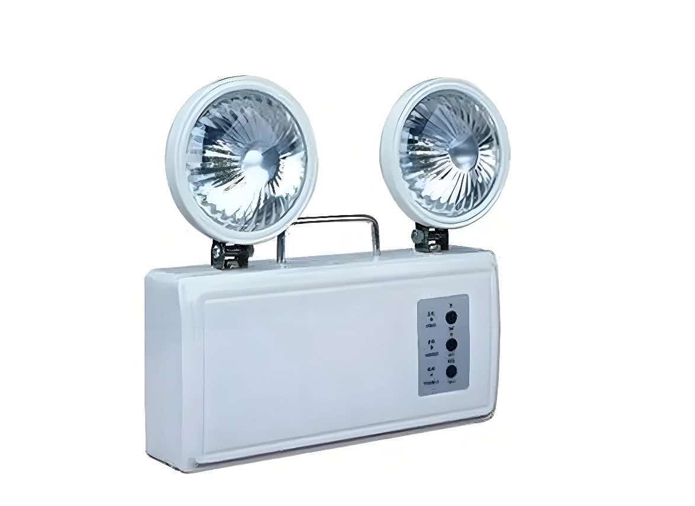
概述
依据消防产品相关技术标准，对建筑物内配置的各类消防器材和防火构件进行质量符合性检验。通过对灭火设备、防火分隔构件、消防供水与灭火系统组件及应急照明装置的性能测试，确保消防产品在突发火情时能够及时启动并发挥有效防护作用。
检测项目
- 防火阀们
- 防火封堵材料
- 灭火器
- 阻火圈
- 灭火毯
- 消火栓箱
- 消火栓
- 消防接口
- 消防水带
- 消防水枪
- 消防软管卷盘
- 应急照明灯
检测标准
- T/CQCA 027《消防及阻燃产品快速检验规程》
人防工程防护设备
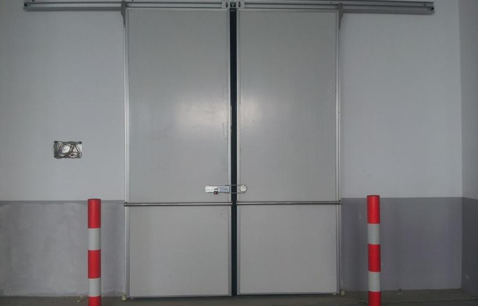
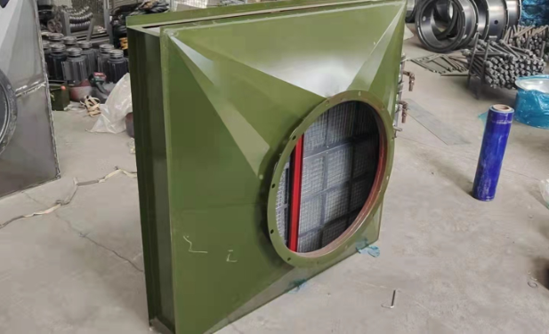
概述
服务于人防工程战时防护功能的保障需求，对各类人防专用防护门、密闭阀门、防爆波活门、排气活门及观察窗等设备进行出厂质量检验和现场安装验收；同时对滤尘通风系统、超压排气系统和防护密闭段通风管道进行联动性能测试，确保人防工程在平战转换后具备完整的防护密闭与通风过滤能力。
检测项目
- 建筑材料见证取样
- 人防检测其他性能
- 手动钢结构门
- 钢筋混凝土门
- 电控门
- 防电磁脉冲门
- 防护密闭封墙板
- 复合材料防护密闭门
- 阀门
- 悬裸式防爆波活门
- 胶管式防爆波活门
- 排气活门
- 密闭观察窗
- 防爆地漏
- 油网滤尘器
- 过滤吸收器
- 超压排气活门
- 风机
- 防护密闭段通风管道
- 防护通风系统
检测标准
- 《人民防空防护设备（防护门类）通用技术要求》（国人防建〔2024〕3号）
- 《RFP型过滤吸收器制造与验收规范》
- 《人民防空防护设备检验检测管理办法》（发改国防规〔2024〕1450号）
房屋鉴定
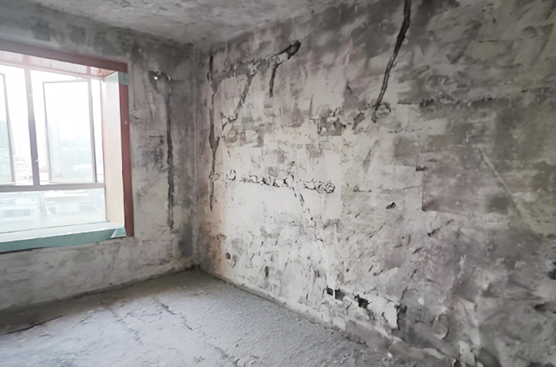
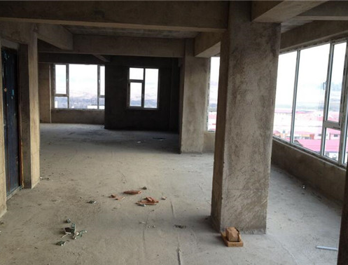
概述
对既有建筑的结构安全性、使用性及耐久性进行综合评估与等级评定。通过现场勘查、结构检测与复核验算，查明房屋存在的质量缺陷和安全隐患，判定其承载能力是否满足规范要求，为房屋改造、扩建、事故处理及安全状况评估提供权威的鉴定结论和维修加固建议。
检测项目
- 房屋安全鉴定（危房鉴定）
- 结构可靠性评估
- 房屋完损等级评定
- 既有建筑抗震鉴定
检测标准
- JGJ 125《危险房屋鉴定标准》
- GB 50292《民用建筑可靠性鉴定标准》
- GB 50023《建筑抗震鉴定标准》
- JGJ 8《建筑变形测量规范》
- GB/T 50344《建筑结构检测技术标准》
- GB 50011《建筑抗震设计规范》